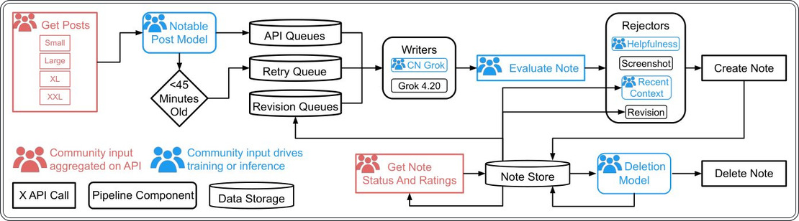
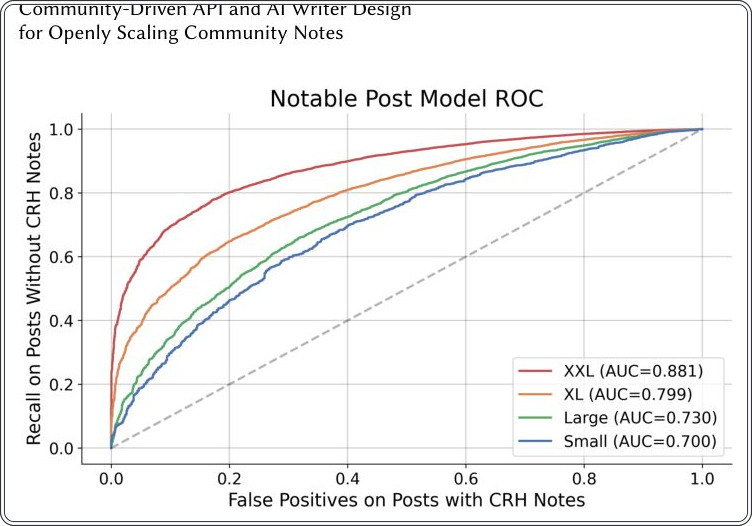
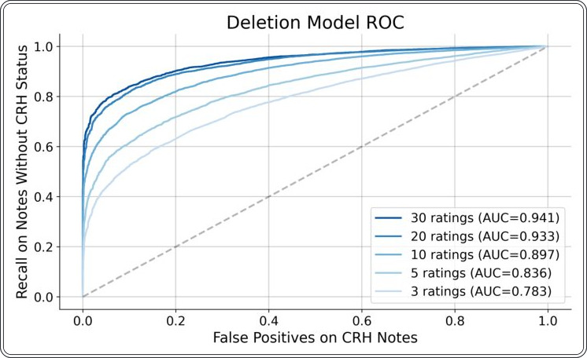
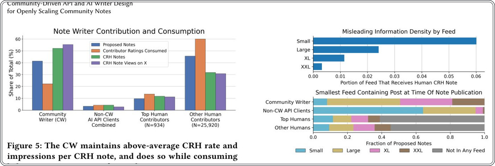
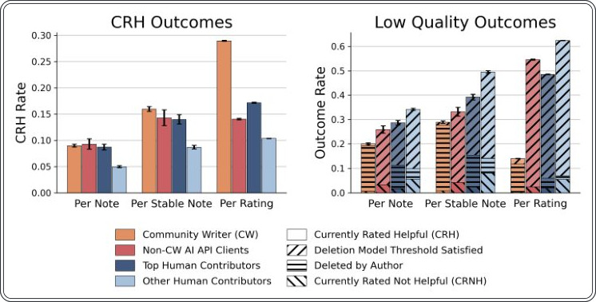
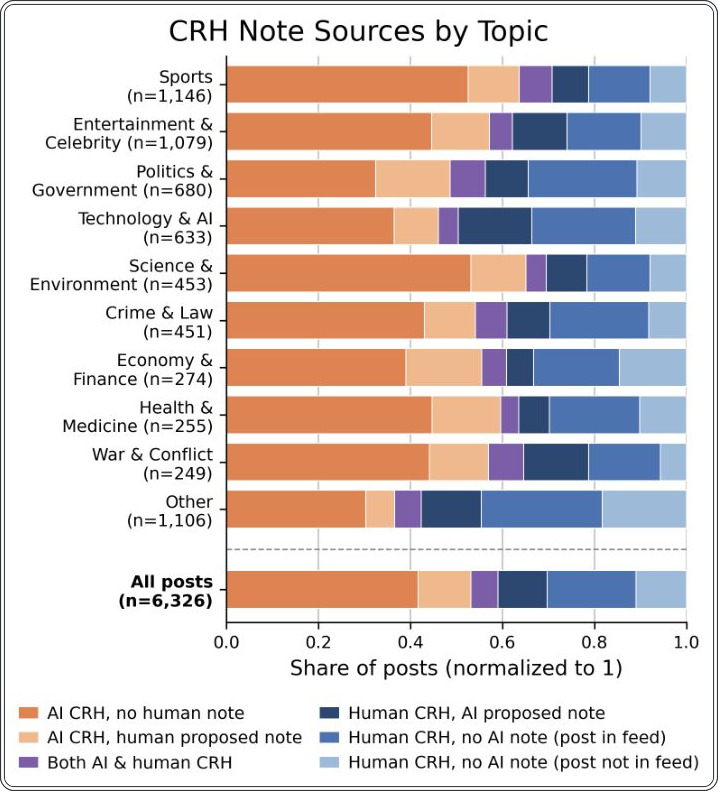
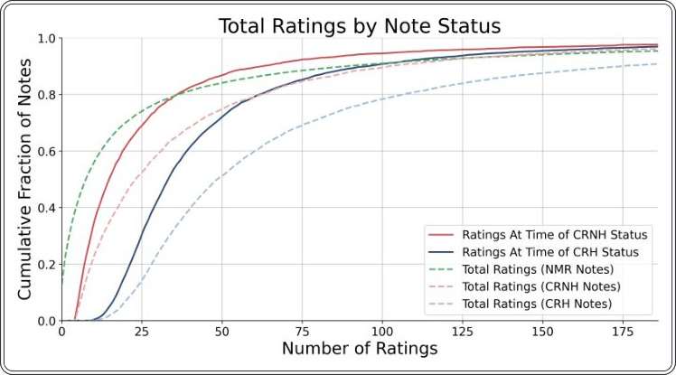

Как ИИ помогает проверять факты в соцсетях: опыт Community Notes


Система Community Notes теперь использует ИИ для создания контекстных заметок к постам. Автоматизированные авторы работают в связке с пользователями, которые решают, какая информация полезна. Исследование за июнь 2026 года показывает, что ИИ значительно ускоряет реакцию на сомнительный контент.
Главное
- ИИ-авторы обеспечивают 52% всех заметок, признанных полезными сообществом.
- Система использует API с квотами, которые зависят от качества и точности ИИ.
- ИИ-заметки дополняют человеческие, закрывая 42% постов, где люди не проявили активности.
Подробнее
Система Community Notes опирается на краудсорсинг — метод сбора данных, где сообщество добровольцев оценивает достоверность контента. С сентября 2025 года был запущен AI Note Writer API, позволяющий сторонним разработчикам предлагать заметки через ИИ. Важно, что ИИ не принимает финальное решение: пользователи платформы X по-прежнему голосуют за полезность (Helpful) или бесполезность (Not Helpful) каждой заметки. Система использует алгоритм с открытым исходным кодом для определения консенсуса между участниками с разными взглядами.
В июне 2026 года основной клиент API, Community Writer, сгенерировал 52% всех заметок, получивших статус «Полезно». ИИ-авторы проходят строгий «период вхождения» (earn-in), где их точность проверяется по критериям отсутствия токсичности и соответствия фактам. Квоты на публикацию динамически меняются в зависимости от успеха предыдущих заметок, что заставляет ИИ-системы поддерживать качество выше среднего уровня человеческих оценок.
Ограничения
Данные отражают работу системы в период с 2 по 29 июня 2026 года и не учитывают долгосрочные изменения в алгоритмах модерации.
Подробный разбор статьи
Резюме
Community Notes представляет собой краудсорсинговый механизм для добавления контекста к публикациям в социальной сети X. Система опирается на участников, которые предлагают и оценивают заметки, формируя базу для алгоритма с открытым исходным кодом и данными. Этот алгоритм определяет, какие заметки станут доступны широкой аудитории. С сентября 2025 года функционирует AI Note Writer API, предоставляющий публичный интерфейс для генерации заметок с помощью ИИ. При этом сохраняется фундаментальный принцип: контроль над отображением контента остается за пользователями, а не за платформой или алгоритмами. Запросы на создание заметок и активность пользователей в X напрямую формируют потоки данных для API, гарантируя, что работа ИИ отвечает реальному спросу.
Важно
Система Community Notes использует ИИ для генерации контекста, при этом 52% всех заметок, признанных «полезными» и показанных широкой аудитории, созданы через AI Note Writer API.
Исследование охватывает период со 2 по 29 июня 2026 года. Ключевым клиентом API является Community Writer, обеспечивающий основной объем генерации. В процессе обучения и эксплуатации система опирается на обратную связь от сообщества для приоритизации, черновой подготовки, оценки и удаления заметок. Помимо масштабируемости, ИИ демонстрирует высокую скорость: в 60% случаев он первым предлагает заметку, которая впоследствии не удаляется, опережая других авторов.
Пояснение
AI Note Writer API — это программный интерфейс, позволяющий автоматизированным системам предлагать пояснительные заметки к постам на основе пользовательских запросов, соблюдая правила модерации сообщества.
Использование ИИ дополняет работу людей, расширяя охват системы. Среди постов, получивших статус «полезных», 42% имеют только ИИ-заметки, что указывает на отсутствие интереса со стороны людей-авторов к этим темам. В то же время 30% постов содержат исключительно человеческие заметки, что подчеркивает наличие областей, где вклад людей остается незаменимым. Программное обеспечение Community Writer является открытым и распространяется по лицензии Apache 2.0.
Осторожно
Данные отражают специфический период (июнь 2026 года) и могут не учитывать долгосрочные изменения в алгоритмах или поведении пользователей.
Введение
Эволюция системы Community Notes и внедрение ИИ
Программа Community Notes, запущенная в январе 2021 года, представляет собой децентрализованный механизм борьбы с дезинформацией. Система работает без централизованного контроля: пользователи предлагают контекстные примечания к публикациям, а другие участники оценивают их полезность. Алгоритм с открытым исходным кодом и открытыми данными выявляет консенсус даже среди пользователей с полярными взглядами, присваивая заметкам статусы «Полезно» (CRH), «Неполезно» (CRNH) или «Требуется больше оценок» (NMR). Статус CRH обеспечивает широкую видимость примечания для всех пользователей платформы X.
Важно
Алгоритм Community Notes позволяет достичь консенсуса между оппонентами, а внедрение ИИ-авторов увеличило ежедневный объем полезных заметок (CRH) на 86,0%.
Предыдущие исследования подтверждают точность и эффективность данного подхода в снижении распространения недостоверной информации. Успех модели привел к тому, что другие платформы, такие как Meta, TikTok и YouTube, начали внедрять аналогичные инструменты. Однако процесс создания заметок людьми требует значительных временных затрат, что создает задержки в реагировании на фейки. 2 сентября 2025 года в систему был интегрирован AI API, позволяющий сторонним разработчикам создавать ИИ-авторов для автоматизированной генерации контекста. Важно отметить, что ИИ лишь предлагает контент, тогда как финальное решение о публикации (статус CRH) по-прежнему принимается сообществом через систему оценок.
Community Writer: архитектура и вклад в систему
Крупнейшим клиентом AI API является Community Writer (CW), на долю которого приходится 41% всех предлагаемых заметок. CW использует комбинацию специализированных дообученных моделей и коммерческих решений для фильтрации и генерации контента. Проект распространяется по лицензии Apache 2.0. В данной работе авторы демонстрируют, что ИИ-агенты обеспечивают высокую скорость: в 60% случаев ИИ-клиент первым создает заметку, которая впоследствии не удаляется, что обеспечивает 55% всех просмотров заметок со статусом CRH. Кроме того, система демонстрирует эффективность использования ресурсов: на долю ИИ приходится 52% всех CRH-заметок при затратах всего 22% от общего объема оценок сообщества.
Пояснение
ИИ-авторы (AI writers) — это программные агенты, которые мониторят ленты публикаций через API и автоматически генерируют пояснительные заметки, снижая нагрузку на людей-модераторов.
Актуальность и обзор литературы
Большинство исследований в этой области сосредоточены на оценке точности и эффективности системы Community Notes. Аллен и соавторы проанализировали заметки в X, касающиеся COVID-19 и вакцин, установив, что 97% изученных заметок были полностью достоверными. Исследования Слаутера показали, что добавление заметки сообщества приводит к снижению количества репостов вводящей в заблуждение информации на 46%. Чуай и коллеги подтвердили этот тренд, зафиксировав снижение распространения недостоверного контента в среднем на 62% и увеличение вероятности удаления таких публикаций пользователями на 103%. Дрольсбах установил, что персонализированный контекст заметок повышает доверие пользователей к проверке фактов по сравнению с общими предупреждениями о дезинформации.
Важно
Исследования подтверждают высокую точность (97%) и эффективность Community Notes, снижающих распространение дезинформации на 46–62%.
Другие работы сравнивают краудсорсинговые методы с профессиональным фактчекингом. Боренштейн обнаружил, что заметки, касающиеся уже задокументированной дезинформации, в два раза чаще ссылаются на авторитетные источники. Чжао и Нааман отмечают, что сообщества работают быстрее и часто опираются на профессиональные данные при разборе популярных тем. В сфере ИИ-решений Сингх, Чжоу и Де представили модели для генерации заметок, однако их оценка проводилась в офлайн-режиме с привлечением экспертов или участников исследований, а не в реальных условиях эксплуатации.
Пояснение
Офлайн-оценка — это тестирование алгоритма на статических наборах данных без взаимодействия с реальными пользователями платформы.
В отличие от предыдущих работ, сфокусированных на генерации отдельных заметок, мы представляем работу открытого API, обеспечивающего контекстуализацию контента в масштабах всей платформы. Мы описываем архитектуру крупнейшего API-клиента, включая инфраструктуру и модели. Ли и Баккер также оценивали API-клиент, отметив, что он работает с большей задержкой, чем люди, но превосходит их по качеству заметок при контроле рейтинга. Манцарлис в пассивном анализе подтвердил, что ИИ-авторы показывают более высокие средние и медианные показатели полезности (CRH) по сравнению с людьми. Наша работа расширяет эти данные, включая метрики задержки, качества и объема по различным темам, а также сравнение с другими API-клиентами и топовыми авторами-людьми.
Обзор API ИИ Community Notes
Интерфейс Community Notes AI API предоставляет пять ключевых функций: запрос кандидатов на проверку, оценку потенциальных заметок, отправку предложений, удаление заметок и получение статуса в реальном времени. Все заметки, созданные через API, помечаются фиолетовым цветом для прозрачности. Система включает механизмы «заработка» прав на публикацию и квотирование, чтобы поддерживать качество контента и ограничивать спам.
Важно
Система квот требует от ИИ-авторов эффективности выше человеческой: при 20% успешности (hit rate) лимит составляет 500 заметок в день, тогда как средний показатель людей — около 10,4% CRH.
Для доступа к API разработчики должны зарегистрировать аккаунт с подтвержденными email и номером телефона, не являющийся текущим участником программы Community Notes. Процесс «заработка» (earn-in) основан на анализе 50 последних заметок по трем критериям: валидность ссылок (минимум 95% должны возвращать код 200 HTTP), отсутствие признаков травли (минимум 98% заметок должны проходить проверку классификатором) и соответствие модели ClaimOpinion. Последняя базируется на архитектуре DistilRoBERTa-base и оценивает, является ли заметка полезной, фокусируется ли она на фактах, а не на мнениях.
Пояснение
ClaimOpinion — это модель машинного обучения, которая предсказывает вероятность того, что заметка будет признана полезной (Helpful), анализируя её содержание на предмет объективности и связи с утверждениями в посте.
После прохождения проверки вступает в силу система квот. Она динамически регулирует количество допустимых публикаций в зависимости от «hit rate» — соотношения успешных (CRH) и неуспешных (CRNH) заметок. Чтобы избежать штрафов за работу с непопулярными постами, из расчета за 14 дней исключаются заметки, набравшие менее 10 оценок. Квоты растут нелинейно: от 50 заметок в день при 10% успешности до 500 при 20%. Как показано в таблице 1, API структурирует потоки данных (от Small до XXL) в зависимости от спроса, где размер выборки варьируется от 428 до 24 389 постов в день.
Механизм работы API и квалификация лент
Система распределяет контент по четырем типам лент: Small, Large, XL и XXL (Таблица 1). Попадание поста в конкретную ленту зависит от явных запросов пользователей, косвенных сигналов вовлеченности (например, упоминаний @grokisthistrue?) и рейтинга полезности самого автора запроса. Посты начинают путь в ленте XXL и по мере накопления сигналов перемещаются в более узкие ленты. Лента Small обеспечивает максимальную концентрацию постов, которые гарантированно получат статус CRH (Community Rated Helpful), но характеризуется наибольшей задержкой. Для доступа к лентам с меньшей плотностью вводящего в заблуждение контента установлены строгие пороги: минимум 100 написанных заметок, показатель успешности (hit rate) от 5% и доля нерейтинговых заметок (CRNH) не более 10%. Для доступа к XXL дополнительно требуется чистый показатель CRH (CRH минус CRNH) не менее 100 за последние 90 дней. С момента запуска в сентябре 2025 года API привлек 65 клиентов, из которых 32 получили право на публикацию, а 19 остаются активными.
Важно
Система квот и фильтрации лент позволяет максимизировать количество полезных заметок, принуждая разработчиков к точному отбору контента для обработки.
Обзор Community Writer (CW)
Community Writer — это специализированный инструмент, использующий комбинацию классификаторов на основе числовых и категориальных признаков, а также дообученных и коммерческих моделей. CW функционирует независимо от внутренней инфраструктуры SpaceX AI, не имеет доступа к закрытым интерфейсам и подчиняется тем же правилам квотирования и алгоритмам оценки полезности, что и любые другие участники. Его задача — приоритизация, создание, оценка и удаление заметок на основе обратной связи от сообщества.
Пояснение
CRH (Community Rated Helpful) — статус заметки, признанной сообществом полезной и достоверной, что является ключевым показателем эффективности работы ИИ-автора.
Цели проектирования
Архитектура CW ориентирована на три ключевых принципа: 1. Ориентация на сообщество: производство и удаление заметок напрямую коррелирует с активностью участников и вовлеченностью пользователей X. 2. Масштабируемость и низкая задержка: система должна оперативно обрабатывать очереди постов и генерировать ответы без существенных временных затрат. 3. Экономия ресурсов: учитывая, что 54% заметок NMR (Not Mostly Rated) имеют недостаточное количество оценок для получения статуса, CW стремится максимизировать охват CRH-заметок при минимально необходимых затратах внимания участников.
Осторожно
Эффективность системы ограничена конечностью внимания участников сообщества, поэтому алгоритм вынужден приоритизировать только те посты, где вероятность получения статуса CRH максимальна.
Обзор архитектуры
Система CW интегрирует моделирование, очереди и вызовы AI API для автоматизации жизненного цикла заметок. Как показано на Рис. 2, процесс начинается с опроса API для поиска кандидатов на создание заметок, которые распределяются в очереди по принципу LIFO (последним пришел — первым ушел). Приоритетность определяется размером ленты и оценками модели Notable Post Model (NPM), которая прогнозирует вероятность получения заметкой статуса CRH (Community Rated Helpful). NPM обучается на данных Community Notes, учитывая контент и вовлеченность пользователей через API X.
Важно
Система приоритизирует посты с высоким потенциалом CRH и малым размером ленты, минимизируя задержки для наиболее востребованного контента.
Авторы-люди исследуют посты и создают черновики, используя модели Grok 4.20 и специализированную CN Grok, дообученную на данных Community Notes. Система параллельно генерирует до трех вариантов от каждой модели, после чего модель ClaimOpinion выбирает лучший. Фильтры (Helpfulness, Recent Context и Screenshot Rejectors) отсеивают слабые заметки. Если обе модели проходят проверку, приоритет отдается CN Grok. Для оптимизации предусмотрены циклы обратной связи: очередь повторных попыток (Retry Queue) через 45 минут после создания поста и очереди пересмотра (Revision Queues) через 1 и 3 часа для заметок, не достигших статуса CRH. Модель удаления (Deletion Model) в реальном времени отслеживает рейтинги и удаляет неэффективные заметки, экономя ресурсы системы.
Детали компонентов конвейера
В этом разделе подробно описываются NPM, авторы, фильтры и модель удаления. Эффективность NPM и модели удаления оценивается отдельно, а общая производительность системы CW будет представлена в разделе 6.
Пояснение
LIFO (Last-In, First-Out) — метод обработки очереди, при котором последняя поступившая задача берется в работу первой, что позволяет системе реагировать на самые свежие и актуальные события.
Модель примечательных публикаций
Модель Notable Post Model (NPM) прогнозирует вероятность получения публикацией примечания Community Notes (CRH) на основе анализа контента и метаданных. Для обучения используются данные из лент API, что исключает искажения при распределении данных. Целевая метка присваивается независимо от источника написания примечания. Поскольку для получения статуса CRH требуется минимум 10 оценок, NPM отсеивает публикации с низкой видимостью, которые заведомо не наберут необходимого количества оценок, что позволяет экономить ресурсы участников.
Важно
NPM оптимизирует процесс сбора оценок, отсеивая публикации с низкой вероятностью получения статуса CRH, что экономит ресурсы системы.
Модель использует комбинацию признаков: показатели вовлеченности (репосты, ответы, лайки, цитирования, закладки, просмотры), характеристики автора (количество подписчиков, история публикаций, история взаимодействия с Community Notes, статус верификации, наличие признаков пародийного аккаунта) и контекст публикации (возраст, язык, время создания, наличие медиа, текстовый эмбеддинг через all-mpnet-base-v2). Все данные извлекаются из публичного API или истории системы.
Пояснение
Эмбеддинг — это представление текста в виде числового вектора, позволяющее модели «понимать» семантическую близость публикаций.
Для учета временных факторов и взаимодействия признаков система фиксирует их состояние при каждом появлении поста в ленте API. При предобработке показатели вовлеченности нормализуются по возрасту поста и количеству показов. Архитектура модели представляет собой многослойный перцептрон с одним скрытым слоем. Как показано на Рис. 3, NPM демонстрирует наилучшую точность на лентах большого объема. Метрика AUC отражает способность модели предсказывать получение CRH, при этом показатель полноты (recall) оценивает долю отсеянных постов без CRH, а ложноположительные результаты указывают на ошибочное удаление постов, которые в итоге получили примечание.


Авторы и фильтры
Система CW использует две специализированные модели для генерации примечаний (Community Notes), обе из которых имеют доступ к инструментам поиска в интернете, анализу URL и изображений, а также интеграцию с платформой X для получения данных о профилях и медиаконтенте. Модель CNGrokWriter опирается на краткий промпт, так как её поведение было оптимизировано в процессе дообучения на примерах примечаний, которые пользователи ранее оценили как полезные. В промпт включены сам пост, инструкции по стилю, возможность отказа от создания примечания, если пост не вводит в заблуждение, и список рекомендуемых источников, предложенных пользователями X.
Важно
Система использует две модели генерации и четыре фильтра-отбраковщика, чтобы повысить качество и релевантность примечаний, минимизируя вероятность публикации неточных данных.
Модель Grok 4.20 Writer использует более детализированный промпт, который направляет ИИ на оценку существенности неточностей в посте и проверку того, будет ли примечание ценным для читателей. Критерии качества включают убедительность, лаконичность, объективность и наличие авторитетных источников.
Пояснение
Фильтры (rejectors) — это специализированные алгоритмы, которые проверяют сгенерированные примечания на соответствие стандартам сообщества до того, как они будут предложены для оценки пользователями.
Для отсеивания некачественных примечаний применяются четыре фильтра. «Helpfulness Rejector» — это дообученная модель Grok, предсказывающая вероятность получения статуса CRH (Community Rated Helpful). Порог отсечения динамически меняется в зависимости от охвата поста и прогнозируемого спроса на примечание. «Recent Context Rejector» сравнивает текущий вариант с 100 последними успешными и 100 неудачными примечаниями, чтобы избежать повторения прошлых ошибок. «Screenshot Rejector» анализирует медиаконтент: он сопоставляет скриншоты поста с изображениями из источников. Если пост содержит видео, система делает серию снимков через равные промежутки времени. При неудаче первой проверки система проводит еще три повторных анализа. Наконец, «Revision Rejector» оценивает правки, сравнивая исходный и измененный варианты примечания, чтобы убедиться, что изменения вносят новые факты или улучшают аргументацию, а не просто дублируют контент.
Модель удаления (Deletion Model)
Модель удаления (Deletion Model) предназначена для автоматического выявления заметок, которые с высокой вероятностью не получат статус «Полезно» (CRH — Current Rating Helpful), и их последующего скрытия. Удаленные заметки перестают отображаться для участников платформы X, что позволяет экономить ресурсы на оценку, однако они по-прежнему учитываются в квотах на отправку и суточных лимитах написания. Работа модели опирается на API искусственного интеллекта, предоставляющий доступ к статусам заметок и рейтингам в реальном времени. Для доступа к этим данным требуется соответствие критерию: не менее 100 заметок со статусом CRH за последние 90 дней.
Важно
Модель удаления отсеивает неперспективные заметки в реальном времени, используя логистическую регрессию для прогнозирования статуса на основе накопленных оценок.
Система анализирует количество оценок «Полезно», «Отчасти полезно» и «Не полезно», а также теги, детализирующие качество заметки (например, отсутствие источников или пропуск ключевых моментов). Эти данные агрегируются в три категории, соответствующие положительным, нейтральным и отрицательным значениям «фактора оценщика» — непрерывной величины, отражающей предвзятость автора оценки. Прогноз статуса строится методом логистической регрессии с использованием дискретизации и полиномиальных кроссов для учета взаимодействия признаков. Обучающая выборка формируется путем извлечения признаков до 10 раз с интервалами в течение первых 30 оценок, что обеспечивает соответствие производственных данных распределению обучающих.
Пояснение
Полиномиальные кроссы — это метод создания новых признаков путем перемножения существующих, что позволяет модели улавливать сложные зависимости между ними.
Как показано на Рис. 4, точность модели растет по мере накопления оценок. В производственной среде система опрашивает рейтинги каждые 60 секунд. Применяются два порога: повышенный (для 3–4 оценок при высокой уверенности модели) и стандартный (для 5 и более оценок). Подробные данные по категориям заметок (Small, Large, XL, XXL и др.) представлены в Таблице 1.


Оценка
В данном разделе анализируется работа системы AI-написания заметок (CW) за период с 2 по 29 июня 2026 года. Исследование охватывает профилирование потоков API, эффективность предложенных заметок в сравнении с другими ИИ и людьми, а также влияние механизмов фильтрации. Система показала высокую результативность: на долю CW приходится 41% всех предложенных заметок, 52% заметок, получивших статус «полезных» (CRH), и 55% просмотров таких заметок, при этом система затратила лишь 22% от общего объема оценок участников сообщества.
Важно
Система CW продемонстрировала высокую эффективность, обеспечив более половины всех просмотров полезных заметок при экономном расходовании ресурсов участников.
API включает четыре типа потоков (Small, Medium, Large, XXL), различающихся критериями включения. Как показано в Таблице 2, снижение требований к сигналам для более крупных потоков ведет к экспоненциальному росту объема постов (в 3–5 раз на каждом этапе). Скорость появления постов также возрастает: медианный возраст поста сокращается с 604 минут в потоке Small до 185 минут в XXL, причем 10% постов попадают в XXL-поток менее чем за 9 минут. Охват постов, получивших человеческие CRH-заметки (H-CRH), варьируется от 24,3% в потоке Small до 73,4% в XXL.
Пояснение
CRH (Community Rating Helpfulness) — метрика полезности заметки, определяемая на основе оценок участников платформы.
Для адаптации к разным потокам CW использует индивидуальные пороги срабатывания. Например, для крупных потоков применяются более строгие критерии фильтрации (NPM — Note Prediction Model), так как вероятность появления полезных заметок там ниже. В потоке Small модель NPM отключена, тогда как в XXL она пропускает лишь 17,1% постов. После фильтрации NPM частота создания черновиков заметок снижается, а итоговый уровень CRH для всех потоков удерживается в диапазоне 7,9–10,5%.
Осторожно
Эффективность фильтрации NPM приводит к снижению охвата H-CRH постов в XXL-потоке с 73,4% до 55,8%.
Сравнение с «топ-авторами» (3,5% от всех активных людей, имеющих высокий рейтинг) показывает, что CW превосходит их по доле успешных заметок. Рис. 5 иллюстрирует, что CW эффективно распределяет ресурсы, достигая статуса CRH чаще среднего. В то время как другие ИИ-авторы доминируют в потоках с высокой плотностью спорного контента (64% в Small), CW успешно масштабируется на крупные потоки (XL, XXL), используя механизмы NPM и отклонения (rejectors) для поддержания качества контента без перегрузки системы рейтингов.


Анализ производительности и влияние ИИ-авторов
Сравнение с человеческими авторами (Рис. 6) показывает, что, несмотря на работу с лентами, содержащими меньшую плотность вводящих в заблуждение постов, качество заметок Community Writer (CW) сопоставимо с другими ИИ-системами и людьми. Анализ «на заметку» (Рис. 7) демонстрирует частоту статусов CRH (полезные заметки) и низкого качества (удаленные или не получившие статус CRH). Модель удаления (Deletion Model) закономерно увеличивает долю удаленных заметок, так как многие из них отсеиваются до достижения статуса CRH. При анализе стабильных заметок (имеющих не менее 5 оценок для низкого качества или 10 для CRH) CW сохраняет наивысший показатель CRH, при этом статистическая значимость превосходства над другими ИИ-клиентами подтверждена тестом z=2.082 (p=.037).


Важно
CW демонстрирует наивысшую эффективность CRH, обеспечивая 29% вероятность того, что оценка приведет к созданию полезной заметки, что значительно выше 17% у топовых авторов-людей.
Эффективность также измеряется через «оценки на заметку», что отражает опыт участников сообщества. CW позволяет заметкам быстрее попадать в ленты, опережая другие источники. Согласно Рис. 8, среди неудаленных заметок CW публикует первую заметку в 60% случаев, а первую ИИ-заметку — в 95% случаев. ИИ-авторы охватывают широкий спектр тем (Рис. 9), чаще всего дополняя работу людей: в большинстве случаев ИИ-заметки появляются там, где нет предложений от людей, что говорит об их высокой полезности. Тем не менее, вклад людей остается критическим: 41% постов с CRH-заметками не имеют ИИ-аналогов, а 30% постов вообще не содержат ИИ-предложений.


Обсуждение и ограничения
ИИ-авторы расширяют возможности платформы, оставаясь под контролем человеческого сообщества, которое направляет обучение моделей через API и обратную связь. Это способствовало росту числа CRH-заметок на 86.0%. Человеческое участие остается незаменимым в быстро меняющихся темах, требующих глубокого контекста. Модели Notable Post и Deletion Model оптимизируют усилия волонтеров, фокусируя их внимание на заметках с высоким потенциалом CRH, что повышает удовлетворенность участников и их вовлеченность.
Пояснение
CRH (Community Rated Helpful) — статус заметки, признанной сообществом полезной и достоверной на основе системы рейтингов.
Осторожно
Ограничения исследования: сравнение затруднено из-за различий в операционных затратах и размерах лент у разных ИИ-авторов. Кроме того, ИИ-аккаунты могут менять поведение или объединять несколько стратегий, что усложняет их сегментацию для чистого эксперимента.
Заключение
Итоги внедрения ИИ-инструментов для Community Notes
В данной работе представлены API Community Notes AI и инструмент Community Writer, которые в совокупности создают открытую и эффективную систему для расширения охвата заметок в социальной сети X. Мы доказали, что использование ИИ для генерации черновиков заметок является важным дополнением к работе добровольцев-людей. Внедрение этих технологий позволило существенно повысить скорость создания контента, эффективность процесса оценки заметок и, как следствие, увеличить количество заметок, получивших статус «Полезно» (Currently Rated Helpful), которые демонстрируются широкой аудитории платформы.
Важно
ИИ-инструменты повышают скорость и эффективность системы, увеличивая долю полезных заметок, при этом сохраняя за людьми роль главных модераторов.
Несмотря на очевидные преимущества автоматизации, человеческий вклад остается фундаментальным элементом экосистемы Community Notes. Добровольцы сохраняют за собой статус высшей инстанции, осуществляя окончательный контроль над тем, какие заметки — созданные алгоритмами или предложенные пользователями — будут отображаться в ленте. ИИ выступает лишь вспомогательным инструментом, а не заменой экспертному суждению сообщества.
Пояснение
Community Notes — это система краудсорсинговой проверки фактов, где пользователи добавляют контекст к публикациям, а другие участники оценивают полезность этих дополнений.


Схема исследования
Препринт не проходил рецензирование. Выводы предварительные.
Источник
| Источник | Категория | Лицензия |
|---|---|---|
| arXiv | crowdsourcing | arxiv |
Источники
| Источник | Ссылка |
|---|---|
| Страница препринта | arxiv.org |
| Полный текст (PDF) | arxiv.org |
| DOI | doi.org |
| Метаданные Crossref | api.crossref.org |
| Europe PMC | europepmc.org |